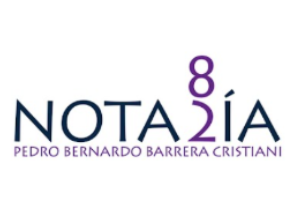

CDMX

Notaría 82 de la Ciudad de México
Datos validados por Pulppo.
Av. Ejército Nacional Mexicano 531, Piso 5, Col. Granada, Miguel Hidalgo, 11520, CDMX.
Contactos PULPPO
👤 Lic. César Acasuso Noval · Abogado de Notaría
👤 Jorge Alejandro Castrejón Mendiola · Abogado Junior
📞 55 50 78 44 99 Ext. 1007
CDMX

NOTARÍAS HLOM DE LA CDMX
Consorcio integrado por cuatro notarías.
- 212 Francis I. Hugues Vélez
- 223 Rosamaría López Lugo
- 246 Guillermo Oliver Bucio
- 126 Adrián Moreno Rivera
Goldsmith 116, Col. Polanco III Sección, Miguel Hidalgo, 11540, CDMX.
CDMX
Notaría 5 y 176 de la Ciudad de México
Motolina 6, Col. Centro Histórico, Cuauhtémoc, 06000, CDMX.
Contacto PULPPO
👤 Carlos Gabriel Cervantes Origel · Notario Público 176
📞 5521-2424 (10 líneas) Ext. 138
Estado de México
Notaría 159 del Estado de México
Aliado en Huixquilucan.
Av. Jesús del Monte 32, Piso 6, Col. Ex Hacienda del Monte, Huixquilucan, 52764, EdoMex.